Subsolo
Garagem e áreas técnicas enterradas. É a parte da obra que ninguém vê depois, e a que mais exige cálculo.
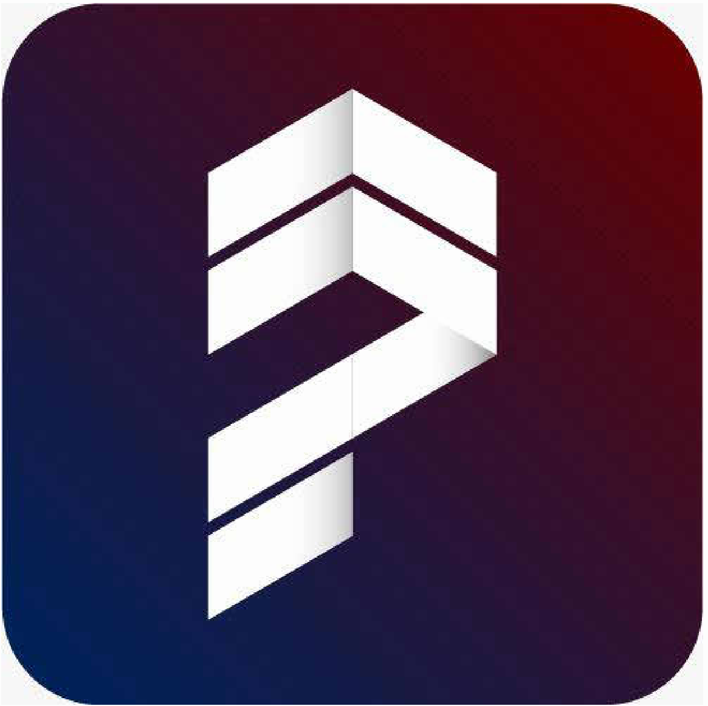
Projetha EngenhariaA Projetha constrói colégios. Role a página e acompanhe uma das nossas obras subir, andar por andar, a partir do modelo real do projeto.
Role para construirGaragem e áreas técnicas enterradas. É a parte da obra que ninguém vê depois, e a que mais exige cálculo.
Entrada, pátio central e as primeiras salas. É por aqui que o aluno chega todos os dias.
A estrutura metálica sobe na frente. Lajes, paredes e esquadrias vêm atrás, cada etapa liberada pela anterior.
Salas empilhadas na mesma prumada deixam as instalações alinhadas e a manutenção mais simples.
Fachada de vidro e as faixas coloridas que dão cara à escola entram na reta final.
O nível da galeria, sobre o auditório.
Telhado e reservatório. O prédio está fechado.
Colégio Adventista, Natal/RN. Ao entardecer, as salas acendem na temperatura de cor do projeto luminotécnico: 4000 K.
Quero construir uma escolaOs ambientes do Colégio Adventista de Natal, do auditório à brinquedoteca. Perspectivas do projeto de interiores da Veneziano Arquitetura.
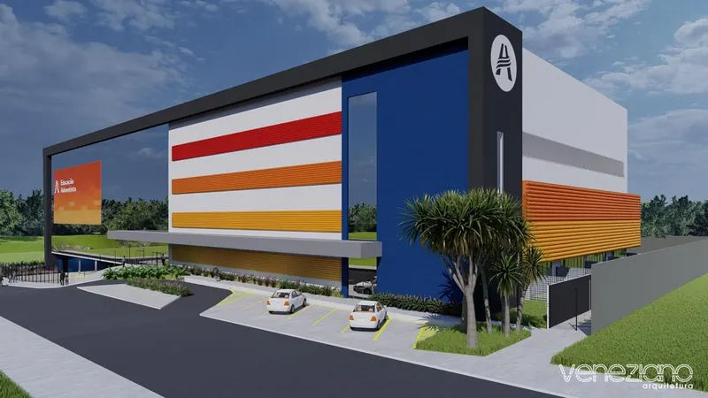
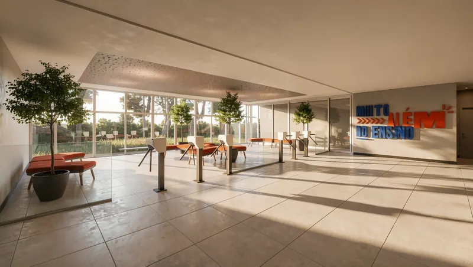
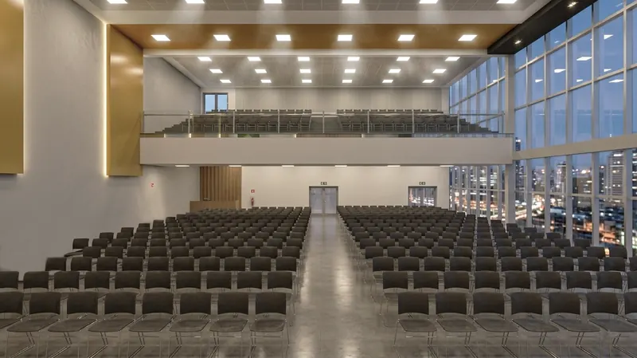
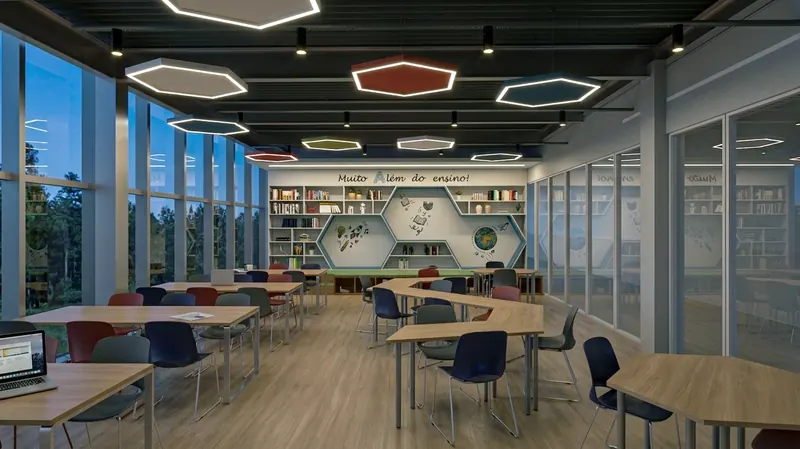
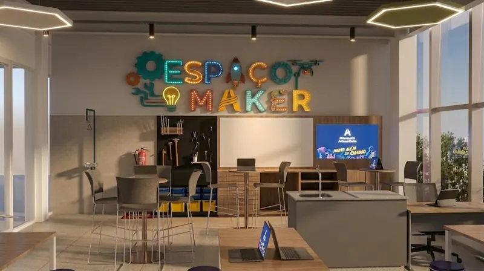
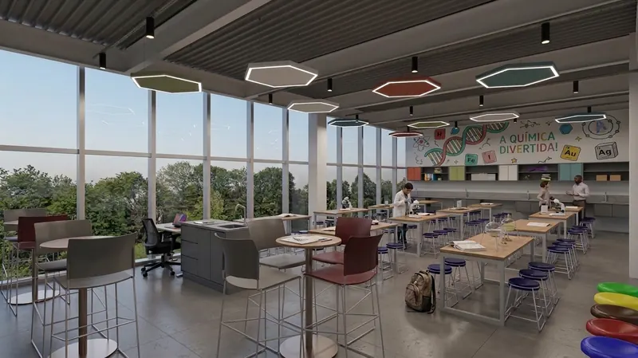
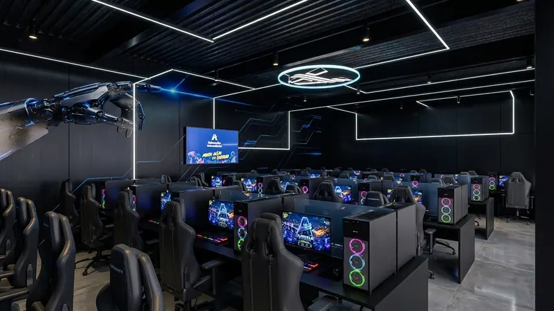
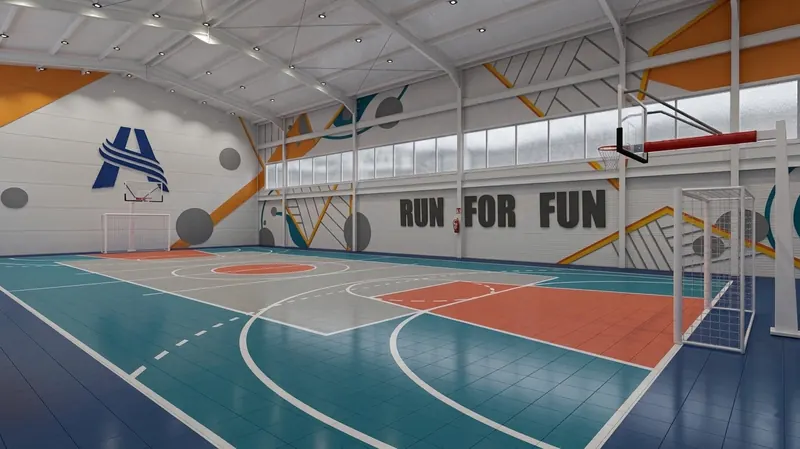
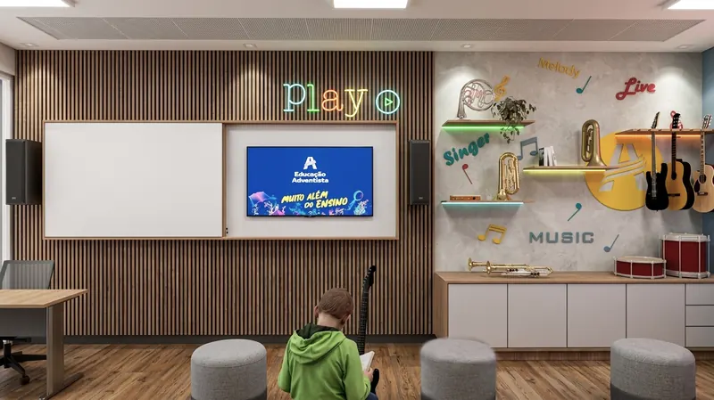
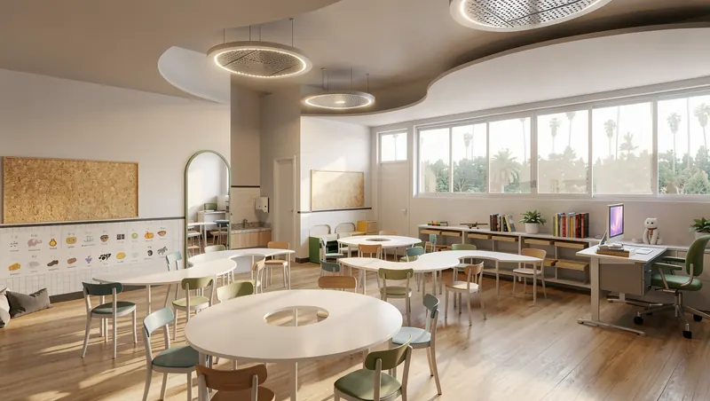
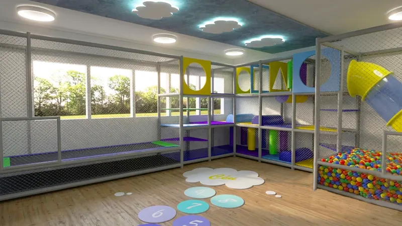
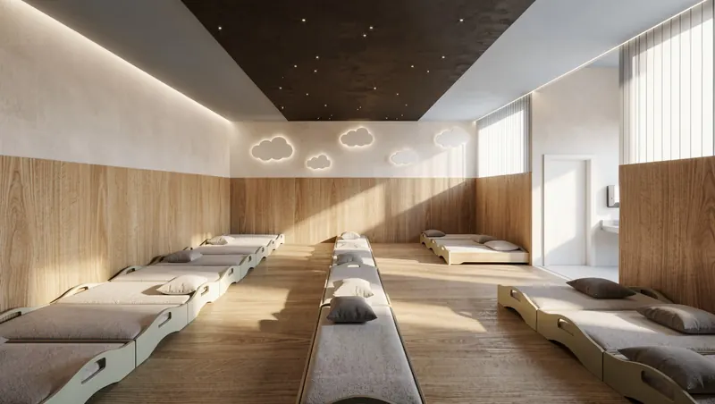
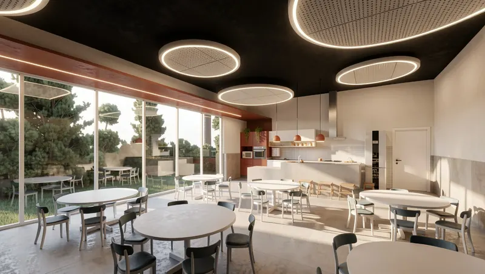
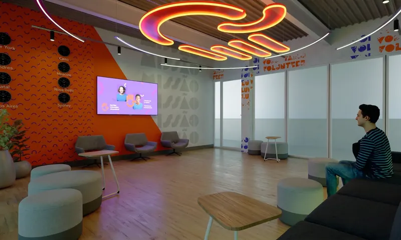
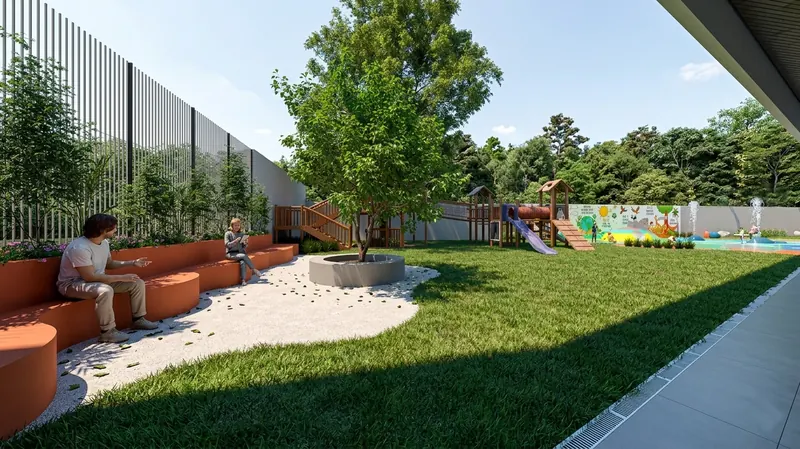
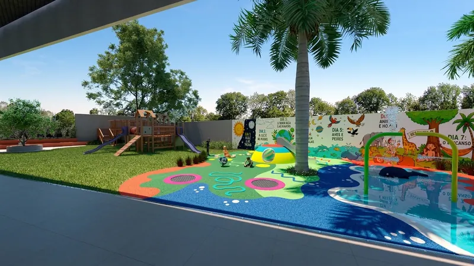
Conte o que a sua rede precisa e fale direto com a equipe de engenharia.